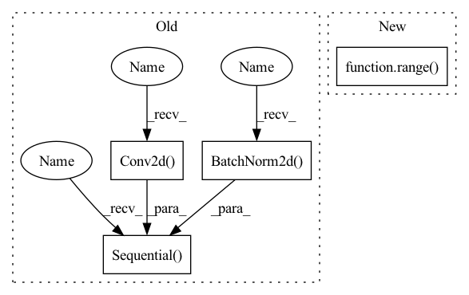

Pattern ID :1271
Before Change
nn.Conv2d(128, 256, 5, stride=2, padding=2),
nn.BatchNorm2d(256), nn.LeakyReLU(0.2)))
self.conv_blocks.append(
nn.Sequential(
nn.Conv2d( 256, 512, 5, stride=2, padding=2) ,
nn.BatchNorm2d( 512) , nn.LeakyReLU(0.2)) )
self.decision = nn.Sequential(nn.Linear(7 * 7 * 512, 1), nn.Sigmoid())
def forward(self, x):After Change
// build up downsampling backbone (excluding the output layer)
curr_channels = base_channels
for _ in range( self.num_downsamples) :
self.conv_blocks.append(
ConvModule(
curr_channels,In pattern: SUPERPATTERN
Frequency: 3
Non-data size: 4
Instances Fragment ID: 3543058
Project Name: open-mmlab/mmgeneration
Commit Name: e6233adabc8816f01d309e057be20fae845cdd3c
Time: 2021-04-27
Author: yangyfaker@gmail.com
File Name: mmgen/models/architectures/lsgan/generator_discriminator.py
M Class Name: LSGANDiscriminator
N Class Name: LSGANDiscriminator
M Method Name: __init__(10)
N Method Name: __init__(1)
M Parent Class: nn.Module
N Parent Class: nn.Module
M File Name: mmgen/models/architectures/lsgan/generator_discriminator.py
N File Name: mmgen/models/architectures/lsgan/generator_discriminator.py
M Start Line: 107
M End Line: 125
N Start Line: 220
N End Line: 277
Before Change
nn.Sequential(
nn.Conv2d(3, 64, 5, stride=2, padding=2), nn.LeakyReLU(0.2)))
self.conv_blocks.append(
nn.Sequential(
nn.Conv2d( 64, 128, 5, stride=2, padding=2) ,
nn.BatchNorm2d( 128) , nn.LeakyReLU(0.2)) )
self.conv_blocks.append(
nn.Sequential(
nn.Conv2d(128, 256, 5, stride=2, padding=2),After Change
// build up downsampling backbone (excluding the output layer)
curr_channels = base_channels
for _ in range( self.num_downsamples) :
self.conv_blocks.append(
ConvModule(
curr_channels, Fragment ID: 3543057
Project Name: open-mmlab/mmgeneration
Commit Name: e6233adabc8816f01d309e057be20fae845cdd3c
Time: 2021-04-27
Author: yangyfaker@gmail.com
File Name: mmgen/models/architectures/lsgan/generator_discriminator.py
M Class Name: LSGANDiscriminator
N Class Name: LSGANDiscriminator
M Method Name: __init__(10)
N Method Name: __init__(1)
M Parent Class: nn.Module
N Parent Class: nn.Module
M File Name: mmgen/models/architectures/lsgan/generator_discriminator.py
N File Name: mmgen/models/architectures/lsgan/generator_discriminator.py
M Start Line: 107
M End Line: 125
N Start Line: 220
N End Line: 277
Before Change
nn.BatchNorm2d(oup),
)
self.conv2 = nn.Sequential(
// pw
nn.Conv2d(oup, hidden_dim, 1, 1, 0, bias=False),
nn.BatchNorm2d(hidden_dim),
nn.ReLU(inplace=False),
// dw
nn.Conv2d(hidden_dim, hidden_dim, 3, 1, 1, groups=hidden_dim, bias=False),
nn.BatchNorm2d(hidden_dim),
nn.ReLU(inplace=False),
// pw-linear
nn.Conv2d( hidden_dim, oup, 1, 1, 0, bias=False) ,
nn.BatchNorm2d( oup),
)
def forward(self, x):
x = self.conv1(x)
After Change
)
self.conv2 = torch.nn.ModuleList()
for i in range( n) :
self.conv2.append(IRBlock(oup, hidden_dim))
def forward(self, x):
Fragment ID: 3543070
Project Name: fire717/movenet.pytorch
Commit Name: 6eb59cd47bfde753530ed236335910bed9ba7c1d
Time: 2022-08-12
Author: fire15@126.com
File Name: lib/models/movenet_mobilenetv2.py
M Class Name: InvertedResidual
N Class Name: InvertedResidual
M Method Name: __init__(6)
N Method Name: __init__(6)
M Parent Class: nn.Module
N Parent Class: nn.Module
M File Name: lib/models/movenet_mobilenetv2.py
N File Name: lib/models/movenet_mobilenetv2.py
M Start Line: 83
M End Line: 113
N Start Line: 98
N End Line: 120
Before Change
class conv_block(nn.Module):
def __init__(self,ch_in,ch_out):
super(conv_block,self).__init__()
self.conv = nn.Sequential(
nn.Conv2d( ch_in, ch_out, kernel_size=3,stride=1,padding=1,bias=True) ,
nn.BatchNorm2d( ch_out) ,
nn.ReLU(inplace=True),
nn.Conv2d(ch_out, ch_out, kernel_size=3,stride=1,padding=1,bias=True),
nn.BatchNorm2d(ch_out),
nn.ReLU(inplace=True)
)
def forward(self,x):
x = self.conv(x)After Change
nn.Upsample(scale_factor=2),
nn.Conv2d(in_channels, out_channels, 3, 1, 1)
)
self.resblocks = nn.ModuleList([ResNetBlock(in_channels, num_groups, skip_connection_scale, swish, skip_path=skip_path) for i in range( numResNetBlocks) ])
def forward(self, x):
for resblock in self.resblocks: Fragment ID: 3543067
Project Name: atharvbhat/plus-ultra
Commit Name: 03d62302ad59610a32dfa219ac961dd52def9352
Time: 2022-05-30
Author: bhat.atharv@gmail.com
File Name: model.py
M Class Name: conv_block
N Class Name: UBlock
M Method Name: __init__(8)
N Method Name: __init__(3)
M Parent Class: nn.Module
N Parent Class: nn.Module
M File Name: model.py
N File Name: model.py
M Start Line: 32
M End Line: 41
N Start Line: 61
N End Line: 67